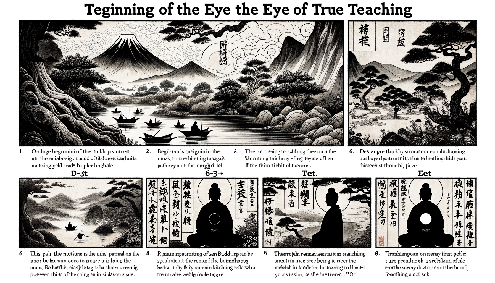

七十五巻 巻一覧
正法眼藏第60 三十七品菩提分法
本ページは tools/gen_web_volumes.py が doc/正法眼蔵.txt から冒頭を抜粋して生成しています。図・詳細解説は今後の手編集で拡張できます。
出典（原文）: https://shomonji.or.jp/zazen/doc/genzou.html
（ローカル生成の全文: 全文ページ）
この巻の位置づけ（学習メモ）
道元『正法眼蔵』七十五巻の第60篇「三十七品菩提分法」です。禅籍・経典への引用や語の行間が重なりやすいので、一度ですべてを要約に還元しない読み方を推奨します。問答 Bot では巻スコープにこの題名を含めると応答が安定しやすいことがあります。
語彙の足場
- 題名語：巻題「三十七品菩提分法」は、道元が本章で特に扱う論点の看板です。辞書義だけに固定せず、本文中の用例で意味を確かめます。
- 引用と典故：公案・経文の引用は、一字一句の照応（何に答えているか）を押さえると全体が見えやすくなります。
- 学び方：冒頭だけでも音読し、分からない箇所は印を付けて後から問うとよいです。
本文（冒頭・自動抜粋）
出典はリポジトリ内 doc/正法眼蔵.txt です。原文の参照元: https://shomonji.or.jp/zazen/doc/genzou.html
古佛の公案あり、いはゆる三十七品菩提分法の教行證なり。昇降階級の葛藤する、さらに葛藤公案なり。喚作諸佛なり、喚作諸祖なり。
四念住 四念處とも稱ず
一者、觀身不淨
二者、觀受是苦
三者、觀心無常
四者、觀法無我
觀身不淨といふは、いまの觀身の一袋皮は盡十方界なり。これ眞實體なるがゆゑに、活路に跳跳する觀身不淨なり。不跳ならんは觀不得ならん、若無身ならん。行取不得ならん、説取不得ならん、觀取不得ならん。すでに觀得の現成あり、しるべし、跳跳得なり。いはゆる觀得は、毎日の行履、掃地掃牀なり。第幾月を擧して掃地し、正是第二月を擧して掃地掃牀するゆゑに、盡大地の恁麼なり。
觀身は身觀なり、身觀にて餘物觀にあらず。正當觀は卓卓來なり。身觀の現成するとき、心觀すべて摸未著なり、不現成なり。しかあるゆゑに金剛定なり、首楞嚴定なり。ともに觀身不淨なり。
おほよそ夜半見明星の道理を、觀身不淨といふなり。淨穢の比論にあらず。有身是不淨なり、現身便不淨なり。かくのごとくの參學は、魔作佛のときは魔を拈じて降魔し作佛す。佛作佛のときは佛を拈じて圖佛し作佛す。人作佛のときは、人を拈じて調人し、作佛するなり。まさに拈處に通路ある道理を參究すべし。たとへば、浣衣の法のごとし。水は衣に染汚せられ、衣は水に浸却せらる。この水を用著して浣洗し、この水を換却して浣洗すといへども、なほこれ水をもちゐる、なほこれ衣をあらふなり。一番洗、兩番洗に見淨ならざれば、休歇に滯累することなかれ。水盡更用水なり。衣淨更浣衣なり。水は諸類の水ともにもちゐる、洗衣によろし。水濁知有魚（水濁りて魚有ることを知る）の道理を參究するなり。衣は諸類の衣ともに浣洗あり。恁麼功夫して、浣衣公案現成なり。しかあれども、淨潔を見取するなり。この宗旨、かならずしも衣を水に浸却するを本期とせず、水のころもに染却するを本期とせず。染汚水をもちて衣を浣洗するに、浣衣の本期あり。さらに火風土水空を用著して、衣をあらひ物をあらふ法あり。地水火風空をもちて、地水火風空をあらひきよむる法あり。
いまの觀身不淨の宗旨、またかくのごとし。これによりて蓋身蓋觀蓋不淨、すなはち孃生袈裟なり。袈裟もし孃生袈裟にあらざれば、佛祖いまだもちゐざるなり、ひとり商那和修のみならんや。この道理よくよくこころをとめて參學究盡すべし。
觀受是苦といふは、苦これ受なり。自受にあらず他受にあらず、有受にあらず無受にあらず。生身受なり、生身苦なり。甜熟苽を苦葫蘆に換却するをいふ。これ皮肉骨髓ににがきなり。有心無心等ににがきなり。これ一上の神通修證なり。徹蔕より跳出し、連根より跳出する神通なり。このゆゑに、將謂衆生苦、更有苦衆生なり。衆生は自にあらず、衆生は他にあらず。更有苦衆生、つひに瞞他不得なり。甜苽徹蔕甜、苦匏連根苦なりといへども、苦これたやすく摸索著すべきにあらず。自己に問著すべし、作麼生是苦（作麼生ならんか是れ苦）。
觀心無常は、曹谿古佛いはく、無常者卽佛性也。
しかあれば、諸類の所解する無常、ともに佛性なり。
永嘉眞覺大師云、諸行無常一切空、卽是如來大圓覺。
いまの觀心無常、すなはち如來大圓覺なり、大圓覺如來なり。心もし不觀ならんとするにも、隨他去するがゆゑに、心もしあれば觀もあるなり。おほよそ無上菩提にいたり、無上正等覺の現成、すなはち無常なり、觀心なり。心かならずしも常にあらず、離四句、絶百非なるがゆゑに、牆壁瓦礫、石頭大小、これ心なり、これ無常なり、すなはち觀なり。
觀法無我は、長者長法身、短者短法身なり。現成活計なるがゆゑに無我なり。狗子佛性無なり、狗子佛性有なり。一切衆生無佛性なり、一切佛性無衆生なり。一切諸佛無衆生なり、一切諸佛無諸佛なり。一切佛性無佛性なり、一切衆生無衆生なり。かくのごとくなるがゆゑに、一切法無一切法を觀法無我と參學するなり。しるべし、跳出渾身自葛藤なり。
釋迦牟尼佛言、一切諸佛菩薩、長安此法、爲聖胎也（一切諸佛菩薩、長に此の法に安んずる、爲聖胎なり）。
しかあれば、諸佛菩薩、ともにこの四念住を聖胎とせり。しるべし、等覺の聖胎なり、妙覺の聖胎なり。すでに一切諸佛菩薩とあり、妙覺にあらざらん諸佛も、これを聖胎とせり。等覺よりさき、妙覺よりほかに超出せる菩薩、またこの四念住を聖胎とするなり。まことに諸佛諸祖の皮肉骨髓、ただ四念住のみなり。
四正斷 あるいは四正勤と稱ず
一者、未生惡令不生（未生の惡をば不生ならしむ）
二者、已生惡令滅（已生の惡をば滅ならしむ）
三者、未生善令生（未生の善をば生ぜしむ）
四者、已生善令増長（已生の善をば増長せしむ）
未生惡令不生といふは、惡の稱、かならずしもさだまれる形段なし。ただ地にしたがひ、界によりて立稱しきたれり。しかあれども、未生をして不生ならしむるを佛法と稱じ、正傳しきたれり。外道の解には、これ未萌我を根本とせりといふ。佛法にはかくのごとくなるべからず。しばらく問取すべし、惡未生のとき、いづれのところにかある。もし未來にありといはば、ながくこれ斷滅見の外道なり。もし未來きたりて現在となるといはば、佛法の談にあらず、三世混亂しぬべし。三世混亂せば諸法混亂すべし、諸法混亂せば實相混亂すべし、實相混亂せば唯佛與佛混亂すべし。かるがゆゑに、未來はのちに現在となるといはざるなり。さらに問取すべし、未生惡とは、なにを稱ずべきぞ、たれかこれを知取見取せる。もし知取見取することあらば、未生時あり、非未生時あらん。もししかあらば、未生法と稱ずべからず、已滅の法と稱じつべし。外道および小乘聲聞等に學せずして、未生惡令不生の參學すべきなり。彌天の積惡、これを未生惡と稱ず、不生惡なり。不生といふは、昨日説定法、今日説不定法なり。
已生惡令滅といふは、已生は盡生なり、盡生なりとは半生なり、半生なりとは此生なり。此生は被生礙なり、跳出生之頂𩕳なり。これをして滅ならしむといふは、調達生身入地獄なり、調達生身得授記なり。生身入驢胎なり、生身作佛なり。かくのごとく道理を拈來して、令滅の宗旨を參學すべきなり。滅は滅を跳出透脱するを滅とす。
未生善令生といふは、父母未生前面目參飽なり、朕兆已前明擧なり、威音王以前の會取なり。
已生善令増長は、しるべし、已生善令生といはず、令増長するなり。自見明星訖、更教他見明星（自ら明星を見ること訖りて、更に他をして明星を見しむ）なり。眼睛作明星なり。胡亂後三十年、不曾闕鹽醋（胡亂より後三十年、曾て鹽と醋とを闕かず）なり。たとへば増長するゆゑに已生するなり。このゆゑに、溪深杓柄長なり、只爲有所以來（只有るが爲に所以に來る）なり。
四神足
一者、欲神足
二者、心神足
三者、進神足
四者、思惟神足
欲神足は、圖作佛の身心なり。圖睡快なり、因我禮儞なり。おほよそ欲神足、さらに身心の因緣にあらざるなり。莫涯空の鳥飛なり、徹底水の魚行なり。
心神足は、牆壁瓦礫なり、山河大地なり。條條の三界なり、赤赤の椅子竹木なり。盡使得なるがゆゑに、佛祖心あり、凡聖心あり。草木心あり、變化心あり。盡心は心神足なり。
進神足は、百尺竿頭驀直歩なり。いづれのところかこれ百尺竿頭。いはゆる不驀直不得なり。驀直一歩はなきにあらず、遮裏是甚麼處在、説進説退。正當進神足時、盡十方界、隨神足到也、隨神足至なり。
思惟神足は、一切佛祖、業識忙忙、無本可據なり。身思惟あり、心思惟あり、識思惟あり。草鞋思惟あり、空劫已前自己思惟あり。
これをまた四如意足といふ、無躊躇なり。
釋迦牟尼佛言、未運而到名如意足（未だ運らさずして到るを如意足と名づく）。
しかあればすなはち、ときこと、きりのくちのごとし。方あること、のみのはのごとし。
五根
一者、信根
二者、精進根
三者、念根
四者、定根
五者、慧根
信根は、しるべし、自己にあらず、他己にあらず。自己の強爲にあらず、自己の結構にあらず、他の牽挽にあらず、自立の規矩にあらざるゆゑに、東西密相附なり。渾身似信を信と稱ずるなり。かならず佛果位と隨他去し隨自去す。佛果位にあらざれば信現成にあらず。このゆゑにいはく、佛法大海信爲能入（佛法の大海は信を能入と爲す）なり。おほよそ信現成のところは、佛祖現成のところなり。
精進根は、省來祗管打坐なり。休也休不得なり、休得更休得なり。大驅驅生なり、不驅驅者なり。大驅不驅、一月二月なり。
釋迦牟尼佛言、我常勤精進、是故我已得成阿耨多羅三藐三菩提（我れ常に勤め精進せり、是の故に我れ已に阿耨多羅三藐三菩提を成ることを得たり）。
いはゆる常勤は、盡過現當來、頭正尾正なり。我常勤精進を我已得成菩提とせり。我已得成阿耨菩提のゆゑに、我常勤精進なり。しかあらずは、いかでか常勤ならん。しかあらずは、いかでか我已得ならん。論師經師、この宗旨を見聞すべからず、いはんや參學せるあらんや。
念根は、枯木の赤肉團なり。赤肉團を枯木といふ。枯木は念根なり。摸索當の自己、これ念なり。有身のときの念あり、無心のときも念あり。有心の念あり、無身の念あり。盡大地人の念根、これを念根とせり。盡十方佛の命根、これは念根なり。一念に多人あり、一人に多念あり。しかあれども、有念人あり、無念人あり。人にかならずしも念あるにあらず、念かならずしも人にかかれるにあらず。しかありといへども、この念根、よく持して究盡の功徳あり。
定根は、惜取眉毛なり、策起眉毛なり。このゆゑに不昧因果なり、不落因果なり。ここをもて、入驢胎、入馬胎なり。いしの玉をつつめるがごとし、全石全玉なりといふべからず。地の山をいただけるがごとし。盡地盡山といふべからず。しかあれども、頂𩕳より跳出し跳入す。
慧根は、三世諸佛不知有なり、狸奴白牯却知有なり。爲甚如此（なにとしてかかくの如くなる）といふべからず、いはれざるなり。鼻孔有消息なり、拳頭有指尖なり。驢は驢を保任す、井は井に相見す。おほよそ根嗣根なり。
五力
一者、信力
二者、精進力
三者、念力
四者、定力
五者、慧力
信力は、被自瞞無廻避處（自に瞞ぜられて廻避の處無し）なり、被他喚必廻頭（他に喚ばれては必ず廻頭す）なり。從生至老、只是這箇なり。七顚也放行なり、八倒也拈來なり。このゆゑに信如水淸珠（信は水淸珠の如し）なり。傳法傳衣を信とす、傳佛傳祖なり。
精進力は、説取行不得底なり、行取説不得底なり。しかあればすなはち、説得一寸、不如説得一寸なり。行得一句、不如行得一句なり。力裏得力、これ精進力なり。
念力は、拽人鼻孔太殺人なり。このゆゑに、鼻孔拽人なり。抛玉引玉なり、抛塼引塼なり。さらに、未抛也三十棒なり。天下人用著未磷なり。
定力は、或者如子得其母（或いは子の其の母を得るが如し）なり、或者如母得其子なり、或者如子得其子なり、或者如母得其母なり。しかあれども、以頭換面にあらず、以金買金にあらず。唱而彌高なるのみなり。
慧力は、年代深遠なり。如船遇度（船の度に遇ふが如し）なり。かるがゆゑに、ふるくはいはく、如度得船（度に船を得たるが如し）。いふこころは、度必是船（度は必ず是れ船）なり。度の度を罣礙せざるを船といふ。春氷自消氷（春の氷自ら氷を消す）なり。
七等覺支
一者、擇法覺支
二者、精進覺支
三者、喜覺支
四者、除覺支
五者、捨覺支
六者、定覺支
七者、念覺支
擇法覺支は、毫釐有差、天地懸隔なり。このゆゑに、至道不難易、唯要自揀擇（至道難易にあらず、唯自ら揀擇せんことを要す）のみなり。
図解（4コマ・AI生成）
教義の根拠は本文・出典に従い、漫画は比喩の補助に留めてください。

深掘り（読解のコツ）
- 道元文は定義の羅列に見えても、多くの場合誤解への遮断と正伝の姿勢が背骨になっています。
- 「当体」「現成」「即」などの語が出たら、その巻独自の差別相にどう接続しているかをメモしておくとよいです。